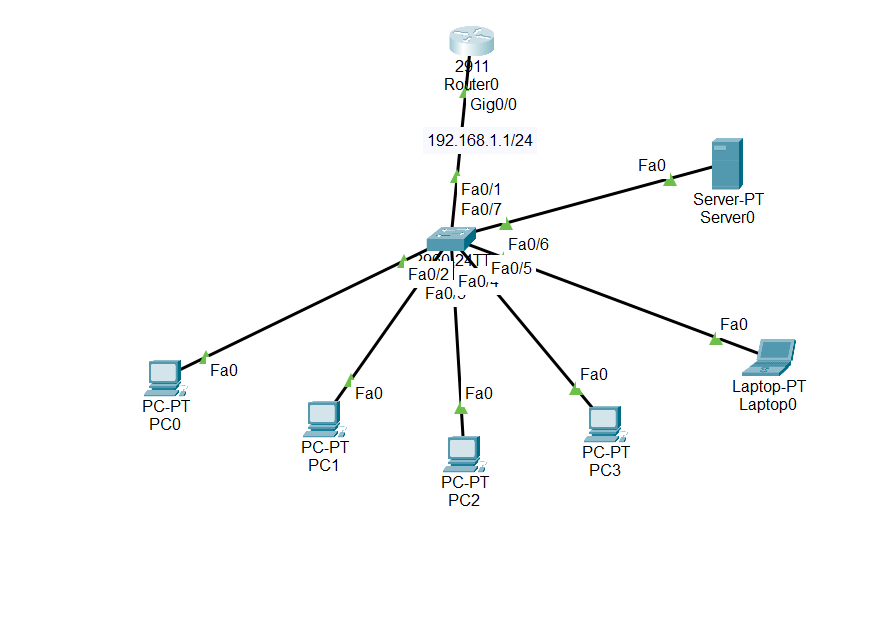

Lab 7
Lab No : 07 (DHCP Server)

Steps:
- Up all interfaces on the router.
- Configure the DHCP server to assign IPs automatically to the PCs.
- From PC0>desktop>IP Configuration SELECT -> DHCP option.
- Ping the PCs to check connection.
Router0:
Router(config)#ip dhcp pool HADI
Router(dhcp-config)#network 192.168.1.0 255.255.255.0
Router(dhcp-config)#default-router 192.168.1.1
Router(dhcp-config)#exit
To exclude any selected IPs from range in the DHCP server to be assigned on devices:
Router(config)#ip dhcp excluded-address 192.168.1.2 192.168.1.5 // range from (2-5) IPs won't be assigned.